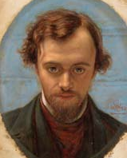

Home > Today's Painter
Gabriel Charles Dante Rossetti
- 1828년 5월 12일 출생(영국 런던), 1882년 4월 9일 사망(영국 켄트 버칭턴언시)
- 
단테 가브리엘 로세티는 예술적이고 문학적인 분위기가 풍부한 환경에서 성장했다. 대학교수였던 아버지는 이탈리아에서 영국으로 정치적 망명을 했으며, 시인인 크리스티나 로세티와 작가이자 비평가인 윌리엄 마이클 로세티는 단테 로세티의 형제들이었다. 그는 시인과 화가가 되기를 원했고 중세풍의 예술과 단테알리기에리의 시에 심취했다. 그의 미술 교사들 중엔 존 셀 코트만과 포드 매독스 브라운도 있었다. 그는 왕립 아카데미에서 윌리엄 홀먼 헌트와 존 에버렛 밀레이를 만나, 그들과 함께 라파엘전파 협회를 결성했다. 이들은 라파엘 이전 시기의 이탈리아 화가들의 화풍을 모방하여, 솔직하고 단순한 자연 묘사와 문학과 신화를 주제로 한 작품을 제작했다. 또한 풍부하고 다양한 색채를 사용해, 자신들만의 고유한 화풍을 만들어갔다. 로세티의 재능과 매력, 그리고 활력과 열정은 그를 이 모임의 중심인물이 되게 했으며, 더 나아가 라파엘 전파 운동을 확고하게 만들었다. 성모 마리아의 처녀 시절(1848~1849)은 그의 첫 대형작으로서 호평을 받았다. 이 작품을 위해 단테의 누이인 크리스티나 로세티가 모델을 서주었다. 풋내기 화가였던 그는 라파엘 전파 협회(Pre-Raphaelite Brotherhood)의 이니셜인 ‘PRB’라는 이름으로 이 작품을 전시했다.
출처:죽기 전에 꼭 봐야 할 명화 1001점(마로니에북스)